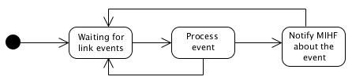

The Link SAP specifies an abstract media dependent interface between the MIHF and lower layers media-specific protocol stacks of technologies such as IEEE 802.3, IEEE 802.11, IEEE 802.16, 3GPP and 3GPP2.
The provided Link SAP implementation is very simple, supporting only two types of events: link down and link up events.
The Link SAP is implemented for Linux and Windows OS. The Linux implementation use rtnetlink and netlink libraries to manage network interfaces, while the Windows implementation use Windows SDK libraries.

At the bootstrap, the Link SAP will send a "Link_Register.indication" message to the MIHF in order to register itself with the MIHF. Then, it stays in a waiting state for messages from the its local MIHF and/or events from the network interfaces.
When a change in the network interface is detected, the following method is called in order to process it:
void link_sap::link_sap::update(nic::interface* it);
The state of the network interface is verified and if its state was changed, the Link SAP will propagate a event notification to its local MIHF. Otherwise, it won't do nothing and will discard the message received.
![[Note]](../../images/note.png) |
Note |
|---|---|
Note that this implementation only process link up and link down events. |
MIH Link SAP Configuration:
--help Display configuration options
--conf.file arg (=link_sap.conf) Configuration file
--conf.recv_buff_len arg (=4096) Receive buffer length
--link.id arg (=link) Link SAP ID
--link.port arg (=1235) Listening Port
--link.tec arg Technology type
--link.link_addr_list arg Interface address
--link.event_list arg List of supported events
--link.command_list arg List of supported commands
--mihf.ip arg (=127.0.0.1) Local MIHF IP
--mihf.id arg (=local-mihf) Local MIHF ID
--mihf.local_port arg (=1025) Local MIHF communication port
|
Note |
|---|---|
|
All configurable parameters are self-explained and, therefore, we will only mention those that are more complex to configure. Technology type: Network interface card technology. Supported values: GSM, GPRS, EDGE, 802.3, Other, 802_11, CDMA2000, UMTS, CDMA2000-HRPD, 802_16, 802_20, 802_22. Usage: tec = <NIC technology> Interface Address: Network interface card address. Usage: link_addr = <interface address> List of supported events: Comma separated list of the Link SAP's supported events. Usage: event_list = <link event 1>, <link event 2>, (...), <link event N> List of supported events: Comma separated list of the Link SAP's supported commands. Usage: command_list = <link command 1>, <link command 2>, (...), <link command N> |
The Link SAP can be configured based on a set of parameters, which can be configured either using an configuration file or passing them directly in the command line.
The provided implementation of the Link SAP can be used as the base of your Link SAP implementation, since it allows to do several extensions in a simple and fast way.
For example, in default handler can be added specific behaviour for a received request message. In this way, the Link SAP can adopt its behaviour based on the received requets.
void link_sap::default_handler(odtone::mih::message& msg, const boost::system::error_code& ec)
Before running the Link SAP, the local MIHF should already be running. Otherwise, the Link SAP will try to register with a non-exitent MIHF.
You can trigger some events by just disconnecting, disabling or shutting down your network cable/interface or wireless card (according to what you configured).